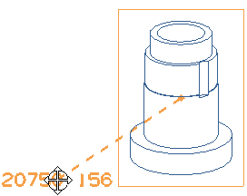

将注释关联到视图上，以便当视图在当前图纸中移动，或者移动到另一个图纸上时，注释也将跟随移动。
右击注释并选择关联到视图。
选择正三轴测图。
注意您已经将注释与视图关联，可以将它拖动到图纸页中的任意位置，并且保持与视图的关联性。
拖动注释到视图左侧。

一条辅助线从视图中心延伸到注释中，当您移动注释时看到这个辅助线，就会知道它已与视图关联。
|
注释 |
只要右击并选择取消与视图的关联，就可以断开注释的关联性。也可以在拖动注释时按住 Alt 键，就会自动断开与视图的关联性。 |